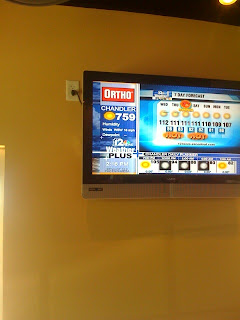

Skip to the record
Threads
The Wayback
Recovered weblog entry
You thought 115 was hot?
June 18, 2008
/
RyanDavid Burningham

Newer
A pleasant surprise
Older
Post 100
Dig somewhere else
Will I absolutely regret staying up until 1:23am? Yes. Am I thrilled…
Fragment